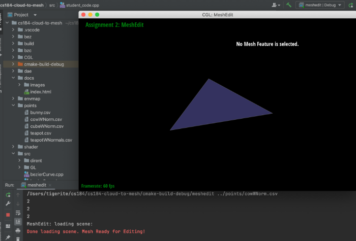

There are two main problems we are trying to solve. First, we want to take a point cloud and convert it into an accurate, well formed mesh. While point clouds are useful in storing the points of various locations of an image, a mesh is more informative and models the image more in real-life. Meshes are useful when performing more robust analysis and modeling. The second problem we are trying to solve is enhancing the quality of the mesh. More naive techniques for regularizing a mesh may result in irregularity of the polygons and oversmoothing. We want to ensure that the meshes we create can be utilized properly for analysis, processing, etc. These problems are challenging because when creating the mesh from the point cloud input, we want to be able to choose points in such a way that we form a convex shape. If we think about the raw data (i.e. group of 3D coordinates in space), we are basically trying to create a convex hull first. We want to ensure that our algorithm connects edges intentionally. The output of the first part of our project needs to be in such a format that it is valid to regularize. We will solve it by closely following the Ball Point Algorithm outlined in the resource link.
We have read the resources (articles, slides, etc.) and have gained familiarity with the algorithm “The Ball-Pivoting Algorithm for Surface Reconstruction”. This is the first part of our overall project, where we convert a point cloud to a mesh. We have started the overall boilerplate code. First, we used project 2 as a general framework to get started. The project 2 code was useful because it has the interfaces required to help us render our visualizations. We can model the way we parse and load files after how project 2 code loads .dae and .bez files. Using project 2 code will also allows us to compare the meshes we create with the ones used in the project. We edited three files: main.cpp, student_code.h, and and student_code.cpp. In main.cpp, we added functionality to support taking in .csv files with data points → which is our point cloud representation. Each datapoint is 6 elements long, with three coordinate points and three normal points. Based on existing logic, we create a polygon mesh and add it to the scene nodes to project and visualize. In student_code.h, we created three structs: triplet, vert, and mesh constructor. The triplet stores 3 points of a triangle and the vert represents a cloupoint class, storing the position and normal vector. The mesh constructor is something we designed that will essentially run the BPA (Ball Pivoting Algorithm). In student_code.cpp, we first populated the mesh constructor class. Essentially, we keep track of the minimum and maximum of each axis. We create a grid with cubes of dimension 2p x 2p x 2p and populate it with input points so we can find the neighbors of a point quickly. This is important for our algorithm because we want to create well-connected and formed meshes. We iterate through the vector of input points parsed from the csv file so that we can run the algorithm.
For results, we take in a csv file full of points and generate a dummy triangle through the visualizer code provided. The project 2 boilerplate code already provided a lot of the visualization and rendering code. Once the ball pivoting algorithm is implemented, the more accurate point based results will be here.
|  |
On pace with our plan, we were able to finish reading papers and planning out our high level code pipeline by 4/11. We figured out how to integrate existing project boilerplate code into our repo. We compiled new class and data structures related diagrams that we would need to use. We also implemented multiple method signatures as well as pipeline within the boilerplate code from 4/18 to 4/25. We overshot the deadline by 7 days, but we were able to make progress on this portion. For the ball pivot algorithm, we wrote out pseudo code but have yet to write out the entire algorithm step by step.
William Shue: Work on logic for find seed triangle Everyone: Also work on milestone
Amrita: Work on logic for ball-pivot
William Louis: Work on logic for Glue and Union
William Louis: Work on logic for Glue and Union
William Shue: Wrap up for BPA
Amrita: Work on regularization
William Louis: Work on regularization
Tiger: Testing and fine-tuning
Everyone: Prep for presentation
Everyone: Prep for presentation